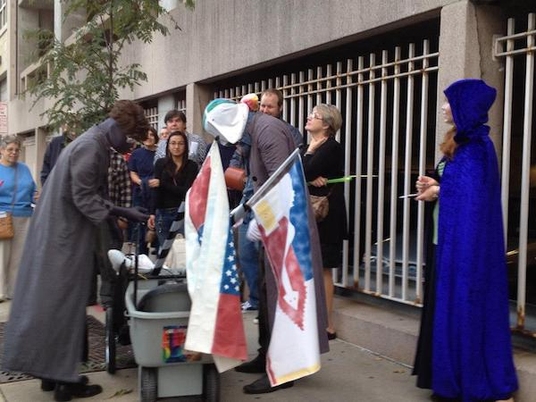
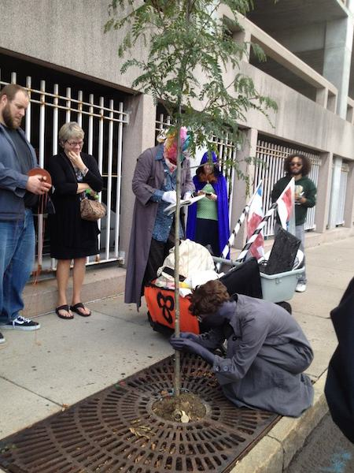
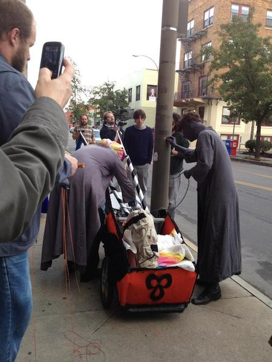
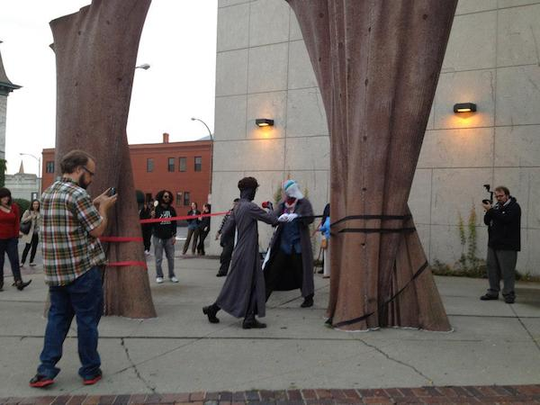

Bloody Noes
Bloody Noes
Bloody Noes are concerned about a loss of spirit in the public space. “Public Space” - like those surrounding ROCO: streets, alleys, sidewalks - functions as a conduit for economy, passages between places where money is exchanged for goods and services. Additional tech accessories allow a human-in-street to move like a ghost through herm environment with little awareness of or attention to this Public Space (sliding through an errand tube).
It is general mission of Bloody Noes to restore space spirit. This is a secular interest in the inherent spirit of all things - people, animals, objects, places, vegetation. We assert: Objects Are People Too. Every object is like the shell of a hermit crab, a surface containing a shy, living being. To operate in the conduit of Public Space is to ignore objects everywhere; Object Spirits diminish, Place Spirit suffers. Bloody Noes would therefore like to perform an immersive “spiritual pump-up” of the Public Space surrounding ROCO.
DJ Cardboard and MC Drywall will travel the surrounding block with a Mobile Sanctification Unit (MSU). The MSU is a portable cart of tools used for spiritual acknowledgement of the neglected and demeaned objects existing within transitory Public Space. We turn our attention to a square of sidewalk, a parking meter, a bench, a tree. Spiritual Acknowledgement techniques include compassionate inquiry, aided listening (contact mic), touch therapy. We will attempt to let the Object know that we know herm is alive and vibing, and express appreciation. We will finally Sanctify the Object's immediate area (bells, smoke) to communicate the charge of the area to passing dumb humans.
|  |  |
|  |  |